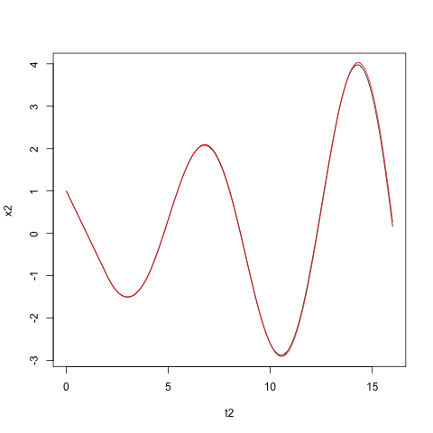

Solución de la ecuación diferencial con retardo:
$$ x' = x(t-\tau) \text{ para } \tau < t \leq 0 $$

Super
cali
fragilístico
espialidoso.
Este es un texto normal y este texto está resaltado.
Aquí usamos mucha importancia y aquí énfasis suave.
# solucion de la ecuacion x'(t) = -x(t-T) para t >= 0
# con x(t)=1 para t en [-T,0]
t2=5
#======================= solucion analitica con retardo
tao = 2
del1 = .1
n = tao/del1+1
t = seq(0,1,length.out = 100)
nrep = 8
t2 = c()
x2 = c()
for (n in 1:nrep){
#n = 2
tt = tao*t+(n-1)*tao
x = 1
for (k in 1:n){
x = x + (-1)^k * (tt-(k-1)*tao)^k / factorial(k)
}
t2 = c(t2, tt)
x2 = c(x2, x)
}
file = 'ecu2_1'
png(paste(file,".png",sep=''))
#print(length(t2))
#print(length(x2))
#print(t2)
#print(x2)
plot(t2,x2, type='l')
#======================= solucion numerica con retardo
tao = 2
del1 = .01
n = tao/del1+1
t = seq(0,tao,length.out = n)
y = rep(1, n)
nrep = 8
#cat('nrep:', nrep, '\n')
tt = t
for (i in 2:nrep){
tt = c(tt, (i-1)*tao+t[2:n])
}
print('tt')
print(tt)
nt = length(tt)
yy = rep(0,nt)
y1 = y[1]
yy[1] = y1
for (i in 2:n){
y2 = y1 - del1*y[i]
yy[i] = y2
y1 = y2
}
#print('yy')
#print(yy)
#print('y1')
#print(y1)
for (i in (n+1):nt){
y2 = y1 - del1*yy[i-n]
yy[i] = y2
y1 = y2
}
#print(tt)
#print(yy)
#print(length(tt))
#print(length(yy))
points(tt, yy, type='l', col='red')
dev.off()